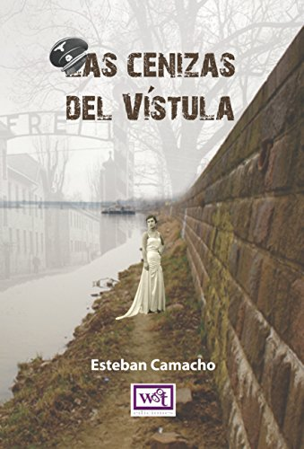

LAS CENIZAS DEL VISTULA

- Autor: Esteban Camacho
- WGT Ediciones 2016
- Fecha de Presentación: 15 de mayo de 2016
- Idioma: Español
- ISBN: 9789871827596
- Formato: PDF + CDRoom (Audiolibro)
- Compatibles con: Windows, Mac, iOS, Android & eReaders
- Todos los derechos reservados
"Una historia romántica en medio del drama en la que el amor, a pesar de la violencia y el odio, siempre tiene una oportunidad"